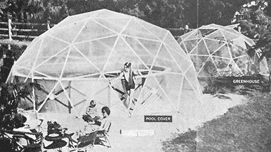
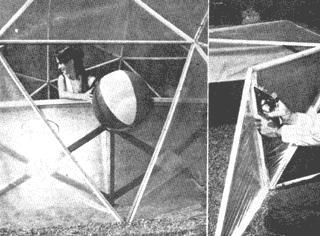
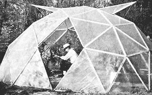

Reprinted courtesy of Popular Science Monthly ©1966, by Popular Science Publishing Co., Inc.
Can't wait until spring warms up enough for you to break out the swimming pool? Reluctant to close it in the fall when the air starts getting chilly? Here's a perfect solution: a plastic-covered sun dome over your pool. It's the cheapest, simplest way to extend your summer activities. You'll be able to swim nine months of the year in most locations; all year, with extra heat. And you can build one like the big one above for as little as $60.
On a sunny day, the temperature inside the dome is 20 to 30 degrees warmer than outside. And the heat's free; it comes from trapped solar heat, the same way as in a greenhouse. With 'a pool, the water will absorb heat from the sun during the day and give it off at night. This keeps it 10 to 15 degrees warmer inside the dome for swims at night and on cloudy days. A pool- or space-heater makes it still warmer.
But the benefits of an expanded summer aren't limited to pools. With a sun dome, you can start your outdoor barbecues earlier and continue them later in the season. As a greenhouse, it lets you grow colorful flowers the year round, or start tomato and other plants early. It's a fine outdoor winter playroom for the kids: There's room for a Ping-Pong table, picnic table, chairs.
Cover the dome with screening and it's a screenhouse. Put this over your pool, or over your picnic table and charcoal grill, and the delights of a summer's evening outdoors won't be spoiled by mosquitoes and other things that fly in the night.
The principle that gives this dome (it's called a geodesic dome) its remarkable strength was discovered by Buckminster Fuller. It's a patented design of interlocking tetrahedrons and icosahedrons that distributes forces evenly throughout the entire framework so that tension and compression forces are balanced. You could say that mathematics holds it up. That's why you can build it with slim sticks and plastic film.
The domes you see here were built by Ernest Muehlmatt of Xledia, Pa. They're made of 1/2 inch-by-3/4'strips of clear pine formed into triangles and covered with polyethylene film. There are only two sizes of triangles and everything is put together with a stapling gun. No nails or screws are used except on the door frame and hinges. You can build it in a weekend, and you can take it down in just a few hours for storage.
First one: a greenhouse. Muehlmatt, a professional florist, built his first dome as a greenhouse. It is 16 1/2inch in diameter. Excited by its possibilities, the editors of POPULAR SCIENCE asked him to build one big enough to go over a large swimming pool. We sent him one of the new Doughboy Silverline vinyl pools with interlocking steel framework. It is 18' in diameter and 4' deep. He made the dome big enough to give room to walk around the sides of the pool. It's 25' across and 8'9 inch high. But it can be made even larger rising the same techniques.
Polyethylene is the cheapest material to use for covering the dome. It costs less than one cent a square foot in four-mil thickness. Vinyl the same thickness costs nearly five cents. Vinyl has more strength and clarity, and lasts several seasons outdoors. Polyethylene lasts only about one season when exposed to the sun. But since re-covering is fast and easy, you can keep costs down by using polyethylene film and re-covering the dome when necessary. For a screenhouse, you use fiberglass screening. The cost: about seven cents a square foot.
Using four-mil polyethylene, Muehlmatt spent about $30 for materials for the smaller dome, and about $60 for the larger one.
The sun dome will leak some along the joints of the triangles during rain. This is not important if the dome covers a swimming pool. But it can be made waterproof by putting polyethylene tape on the outside of the joints. Waterproof joints can also be made by putting thin strips of foam rubber between each joint as the dome is assembled. Another way is to caulk the joints.
It's an easy job to repair sections of the plastic that have been damaged or torn. Using a screwdriver, you pop out the staples that hold the damaged panel in place, and take it down for repairs or re-covering. Polyethylene tape can be put over minor splits in the plastic film.
When hot weather comes, you'll want to take the dome off the pool. Three men can lift it and set it aside until you're ready to use it again. Or one man can easily take it apart and store it. You just pull out the staples that hold the sections together.
Another idea: When hot weather comes and you don't want the pool covered, convert the dome into a screenhouse. Just replace a dozen or so of the plastic-covered panels with screen-covered ones.
How to get plans. Since Fuller has a patent (No. 2,682,235) on the design, he gets royalties on every geodesic dome built. But POPULAR SCIENCE makes it easy for you. Send a check or money order for $5, as described on a previous page. You'll get plans and step-by-step instructions on how to build the dome shown here. And you get a license from Fuller to build one. The royalty fee is included in the cost of the plans. You get a choice of sizes (16 1/2' , 25', and 30' diameter), and information about how to put up your dome, repair it, and take it down for storage.
HOW TO GET
YOUR SUN-DOME PLANS
For $5 you can get complete plans, building instructions, and a license from R. Buckminster Fuller, the patent holder, to construct one dome. Send your $5 (check or money order) to Sun Dome, POPULAR SCIENCE, 355 Lexington Ave., New York, N. Y. 10017. Print your name and address. Plans cover all three dome sizes: 16 1/2', 25', or 30' diameter.
As a lot of would-be dome builders have found, it's more than somewhat difficult to get a handle on the mathematics of geodesic design . . . and the companies selling the prefabbed bubbles ain't talkin' . What we'd all like to see, of course, is an easy-to-understand set of plans (with chord lengths and angles figured) for about a 30-foot dome.
Well, be of good cheer. Such plans are available. We can't print 'em but we can tell you where to get 'em: POPULAR SCIENCE. And we CAN reprint the article that introduced the plans.
Note that the construction called out here is wood strips and polyethelene. Don't let that put you off. Once you get the plans, you can substitute plywood, car tops or any suitable material of your choice.
ABOUT FULLER AND HIS DOMES
Silver-haired, 70-year-old R. Buckminster Fuller keeps his home base at Carbondale, III, where he is a professor at Southern Illinois University and lives in a plywood geodesic dome. But most of the time he is jetting about the world explaining his new design science to eager audiences.
Fuller's geodesic dome has brought him fame and fortune, but it's only one of his many inventions. One of his systems makes what he calls "tensegrity" structures. It uses discontinuous compression and continuous tension. The compression struts do not touch one another, but are held apart by a network of tension cables. It's like having a brick building in which the bricks (compression members) do not touch, but are held apart by tension members in such a manner that a stress exerted on the building is immediately distributed throughout the entire structure.
Another system, which he calls "aspension," uses the principle of the catenary cables of a suspension bridge to produce an upward-arched dome.
These strange structures had their beginning way back in 1917 when Fuller began working out a completely new branch of mathematics which he calls "energetic-synergetic" geometry. Although radical, his mathematics, when applied to structures such as the geodesic dome, is unquestionably practical. His dome is recognized by many experts as the strongest, lightest, and most efficient means of enclosing space yet devised by man.
Thousands of Fuller's domes have been built, from one of 36' diameter made entirely of paperboard to a 384'-diameter giant made of alumimum. Now several companies make prefabricated domes under license.
The U. S. Marine Corps uses geodesic-dome shelters that can be carried to the front line by helicopter, and the U.S. Weather Bureau uses a plastic dome to house instruments atop Mount Washington where 200-m.p.h. winds buffet it. Fuller has even proposed to control the climate in mid-Manhattan by putting a two-mile-diameter dome across the island. The bigger the domes, he says, the stronger they are.
|
 Entryway is made by leaving the plastic covering off one of the triangular panels, or by covering the section and hinging it to the dome on one edge. Stapling gun puts everything together fast. Plastic film is stapled to the wood-strip triangles, and the t riangles are stapled together as shown above. |
 Smaller dome (above) is used as a greenhouse. Hinged panels make the doorway and the vents. The dome has weathered two seasons of windstorms and heavy snows without damage. It is shown at left with 8"" of snow on top. The total load was estimated at over 1,000 pounds. |
 |